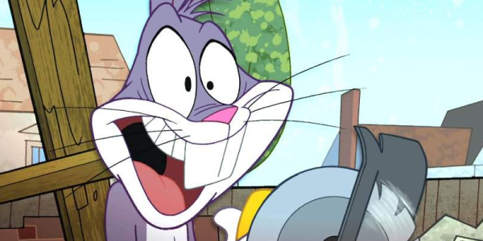
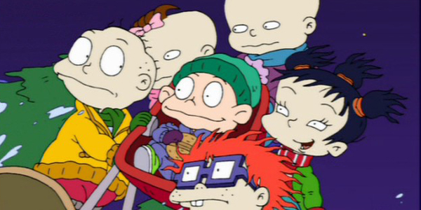

O primeiro desenho animado moderno pode ter sido Fantasmagorie, do francês Émile Cohl, projetado pela primeira vez em 17 de Agosto de 1908 no ‘Théâtre du Gymnase’, em Paris. Émile Cohl espalhou sua técnica pelos Estados Unidos..
Animação tradicional (animação por célula ou animação desenhada à mão): é a mais velha e historicamente a mais popular forma de animação. Em um desenho animado de forma tradicional
A animação digital é a arte de criar imagens em movimento utilizando computadores – um campo entre a computação gráfica e da animação. Todos os dias, são criados cada vez mais trabalhos com o uso de recursos gráficos
Segundo consta de alguns documentos, o primeiro filme de longa-metragem animado teria sido El Apóstol (1917) do argentino Quirino Cristiani. Infelizmente, não existem cópias desse filme.